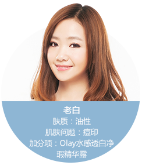
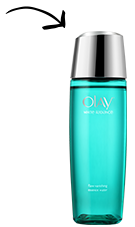

2、皮肤虽然白，但毫无血色
3、肤色黯沉或不匀
4、不画口红时，整个人看起来很憔悴
5、永远找不到和肤色完美融合的腮红
6、即使阳光下，肌肤也没有光泽
7、经常容易在同一个部位长痘痘，而且痘印很难下去
当心！“亚健康”的肌肤，正在“摆臭脸”向你表示不满。
你确定要用一张阴云密布的脸迎接你的Mr. Right？还不快
向幸福奋起直追！
听完李炎宗老师的“幸福课”，你是不是跃跃欲试？其实，虽然“28天”是很多人心目中健康美白的极限，但如果你急着要做“五月新娘”，或者想随着春天来临抓紧变身“桃花磁铁”，我会非常推荐OLAY升级版的美白淡斑小滴管。 它全新升级的OLAY细胞根源狙击科技和新加的宝洁全球专利美白成分异十六醇，保证了产品不只表面去黑，而是作用于通过加速噬黑细胞粉碎黑色素活化酶的能力,从根本上减少黑色素的生成。2周淡斑150%，以终极速度，全面提升肌肤“幸福力”。配套使用净瑕高机能水和净瑕面霜，还能收获加倍的水润效果，让肌肤白皙、健康、通透，如同被爱的光环温柔笼罩。查看详情>
-
随着25岁后代谢变慢，身上有很多暗沉死角很头疼！所以我从去年起开始特别通过食补加强抗氧化和抗糖化，帮助以内养外地美白淡斑。比如，远离高油分的实物，戒甜食，多补充葡萄籽和月见草油等等。坚持下来我的使用心得就是：饮食调理没办法让你“白得像鬼”，但是那些容易色素沉淀的地方，诸如膝盖、手肘和平时不常打理的脖颈，色度确实看上去会变明亮！详情>>
-


痘痘问题看医生可以解决，但因为乱抠加疤痕体质，留下一堆痘痕，这折磨可是要漫长得多。OLAY美白淡斑小滴管当初依靠王牌成分烟酰胺，美白、去红、控油多管齐下，简直是战痘印利器。而升级版“小滴管”创新添加了能从根源阻断黑色素生成的异十六醇，以及提取自天然大米的天然米源肌醇成分，据说比前一代淡斑提速6周！之前错过它的妹子，还不抓紧入手！详情>>
-

对身在北方还是干皮的我来说，普通美白化妆水大多不够保湿。我建议有同样困惑的姑娘尝试这款Olay水感透白净瑕高机能水。它不仅含有90%的超高浓度美白精华液，更重要的是，这样一款使用感清爽的化妆水却意外地非常滋润，保湿力也相当持久！涂抹轻拍到肌肤微微发红发热，再使用精华和面霜，不论是吸收力，还是淡化色斑和提亮肤色的效果，都会再上一个level。详情>>
OLAY水感透白净瑕系列*
规格：正装
奖品数量：5套
活动时间:4月10日-4月20日